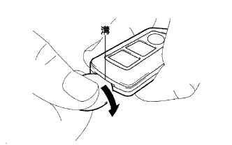
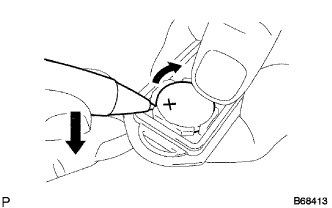

Transmitsutabatsuri (smart key) Remove |
| 1. Remove transmitter battery |
|  |
Insert coins and the like into the groove as shown in the figure, and open the cover of the electrical key transmitter.
|  |
Use a sharp object, such as a ballpoint pen, as shown in the figure, remove the transmit starch [lithium battery (CR22032)].